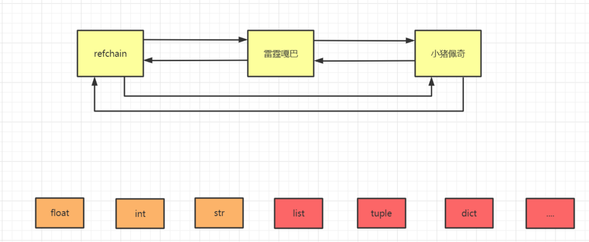
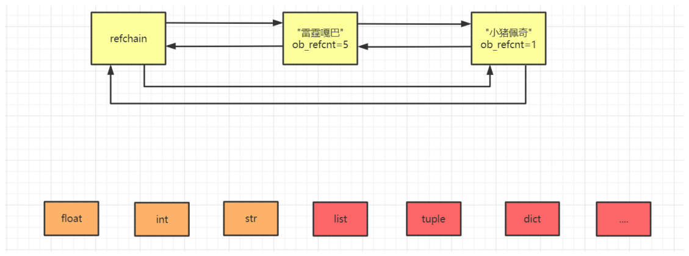
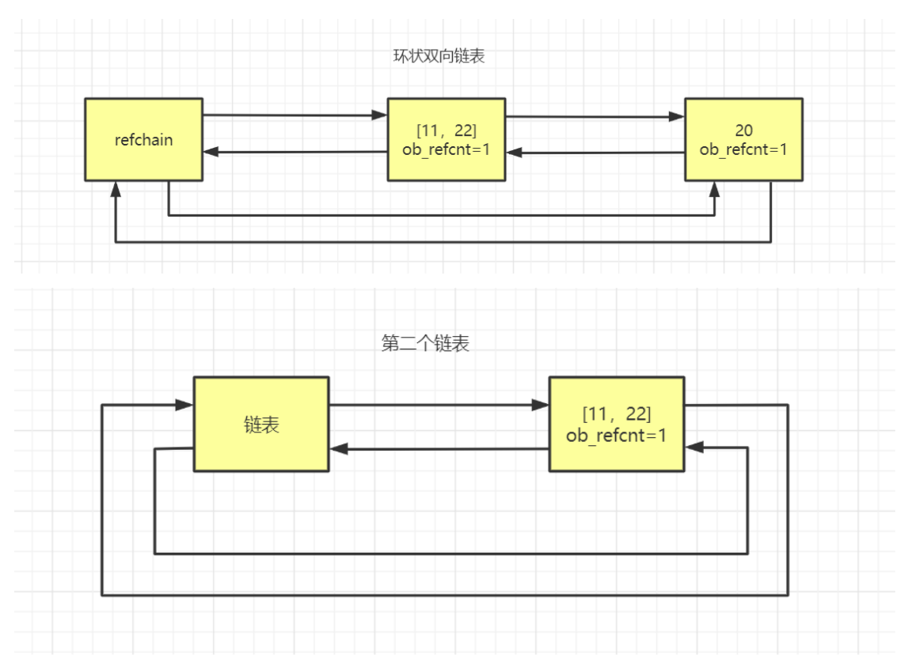
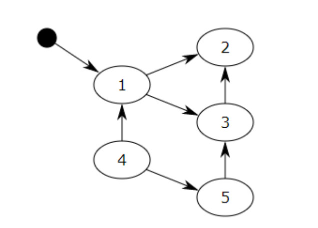
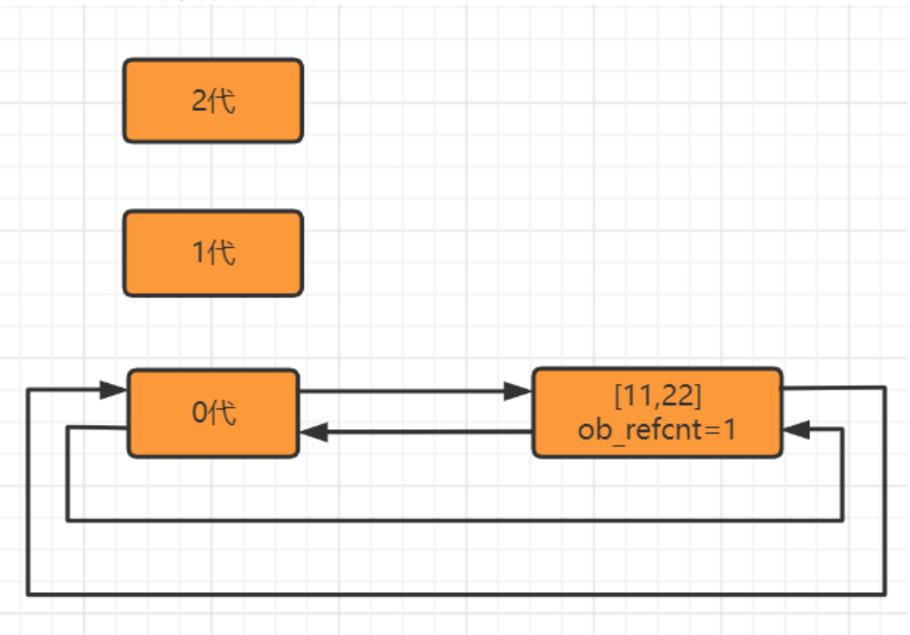
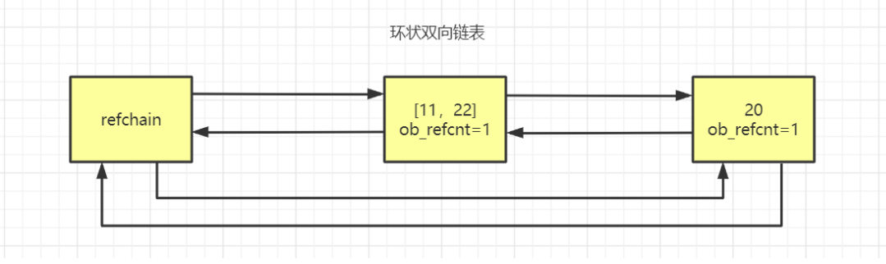

Python垃圾回收机制
总概括
如果将应用程序比作人的身体：所有你所写的那些优雅的代码，业务逻辑，算法，应该就是大脑。垃圾 回收就是应用程序就是相当于人体的腰子，过滤血液中的杂质垃圾，没有腰子，人就会得尿毒症，垃圾 回收器为你的应该程序提供内存和对象。如果垃圾回收器停止工作或运行迟缓,像尿毒症,你的应用程序效 率也会下降，直至最终崩溃坏死。
在C/C++中采用用户自己管理维护内存的方式。自己管理内存极其自由，可以任意申请内存，但也为大 量内存泄露、悬空指针等bug埋下隐患。
因此在现在的高级语言（java、C#等）都采用了垃圾收集机制。python也采用了垃圾收集机制。
Python的垃圾回收机制到底是什么回事？从网上找到一大堆的文档，看的也是一知半解，最终就学会了 一句话
引用计数器为主、分代回收和标记清除为辅
但是实际上其内部原理还是有很多复杂地方的。
引用计数器为主
标记清除和分代回收为辅+缓存机制
一、引用计数器
1.1环状的双向链表(Refchain)

在python程序中，创建的任何对象都会放在refchain的双向链表中
例如：
1 | |
这些对象都会放到这些双向链表当中，也就是帮忙维护了python中所有的对象。 也就是说如果你得到了refchain,也就得到了python程序中的所有对象。
1.2不同类型对象的存放形式
刚刚提到了所有的对象都存放在环状的双向链表中，而不同类型的对象存放在双向链表中既有一些共性特征也有一些不同特征。
1 | |
相同点：刚刚讲到的四个种数据每个对象都包含有。
1 | |
不同点：不同的数据类型还会创建不同的值：
1 | |
所以在python中创建的对象会加到环形双向链表中，但是每一种类型的数据对象在存到链表中时，所存 放的数据个数可能是不同的（有相同点有不同点）。
两个重要的结构体
Python解释器由c语言开发完成，py中所有的操作最终都由底层的c语言来实现并完成，所以想要了解底 层内存管理需要结合python源码来进行解释。
1 | |
在C源码中如何体现每个对象中都有的相同的值：PyObject结构体（4个值：ob_next、ob_prev、 ob_refcnt、*ob_type）
9-13行 定义了一个结构体，第10行实际上就是6，7两行，用来存放前一个对象，和后一个对象的位置。
这个结构体可以存贮四个值（这四个值是对象都具有的）。
在C源码中如何体现由多个元素组成的对象：PyObject + ob_size(元素个数)
15-18行又定义了一个结构体，第16行相当于代指了9-13行中的四个数据。
而17行又多了一个数据字段，叫做元素个数，这个结构体。
以上源码是Python内存管理中的基石，其中包含了：
2个结构体
PyObject，此结构体中包含3个元素。
- PyObject_HEAD_EXTRA，用于构造双向链表。
- ob_refcnt，引用计数器。
- *ob_type，数据类型。
PyVarObject，次结构体中包含4个元素（ob_base中包含3个元素）
- ob_base，PyObject结构体对象，即：包含PyObject结构体中的三个元素。
- ob_size，内部元素个数。
类型封装的结构体
在我们了解了这两个结构体，现在我们来看看每一个数据类型都封装了哪些值：
flaot类型
float结构体：
1 | |
例：
1 | |
int类型
int结构体：
1 | |
道理都是相同的，第2行代指第二个重要的结构体，第三行是int形特有的值，总结下来就是这个结构体 中有几个值，那么创建这个类型对象的时候内部就会创建几个值。
list类型
list结构体：
1 | |
tuple类型
tuple结构体:
1 | |
dict类型
dict结构体:
1 | |
到这里我们就学到了什么是环状双向链表，以及双向链表中存放的每一种数据类型的对象都是怎样的。
1.3引用计数器
1 | |
计数器指的就是一个变量，在相同的命名空间内使用的次数，原本调用一次，计数器为1，再次被调用则计数器加1
计数器减小
当发生以下四种情况的时候，该对象的引用计数器+1：
1 | |
计数器减小
当发生以下四种情况时，该对象的引用计数器-1
1 | |
当引用计数器为0 时，意味着没有人再使用这个对象，这个对象就变成垃圾，垃圾回收。
回收：
对象从refchain的链表移除。
将对象进行销毁，内存归还给操作系统，可用内存就增加。
以上就是引用计数器大体上的机制，但是后面的缓存机制学习完之后我们才会进一步理解，这里不是简 单的说计数器等于0就销毁，内部还有一定的缓冲，目前就简单理解成计数器为0，我们就进行垃圾回收。
例子
1 | |

当我们将"雷霆嘎巴"的对象的引用计数器减小至0时，就将其移除，并且相邻两边直接连接。
1.4循环引用问题
一种编程语言利用引用计数器实现垃圾管理和回收，已经是比较完美的了，只要计数器为0就回收，不为 0就不回收，即简单明了，又能实现垃圾管理。
一种编程语言利用引用计数器实现垃圾管理和回收，已经是比较完美的了，只要计数器为0就回收，不为 0就不回收，即简单明了，又能实现垃圾管理。
例子：
1 | |
其实就是因为两个容器相互引用，无中生有，两个空的，引用后本来也应该是空的，但是计数器不存在空的情况，所以导致出现bug
两个引用计数器现在都是1，那么它们都不是垃圾所以都不会被回收，但如果是这样的话，我们的代码就 会出现问题。
我们删除了v1和v2，那么就没有任何变量指向这两个列表，那么这两个列表之后程序运行的时候都无法 再使用，但是这两个列表的引用计数器都不为0，所以不会被当成垃圾进行回收，所以这两个列表就会一 直存在在我们的内存中，永远不会销毁，当这种代码越来越多时，我们的程序一直运行，内存就会一点 一点被消耗，然后内存变满，满了之后就爆栈了。这时候如果重新启动程序或者电脑，这时候程序又会 正常运行，其实这就是因为循环引用导致数据没有被及时的销毁导致了内存泄漏。
1.5总结
优点
简单
实时性：一旦没有引用，内存就直接释放了。 不用像其他机制等到特定时机。实时性还带来一个好处：处理回收内存的时间分摊到了平时
缺点
维护引用计数消耗资源
循环引用：对于如今的强大硬件，缺点1尚可接受，但是循环引用导致内存泄露，注定python还将引入新的回收机制（标记清除和分代收集）。
二、标记清除
2.1引入目的
为了解决循环引用的不足，python的底层不会单单只用引用计数器，引入了一个机制叫做标记清除
2.2实现原理
在python的底层中，再去维护一个链表，这个链表中专门放那些可能存在循环引用的对象。
就是那些元素里面可以存放其他元素的元素。（list/dict/tuple/set，甚至class）
例如：

第二个链表 只存储可能是循环引用的对象。
维护两个链表的作用是，在python内部某种情况下，会去扫描 可能存在循环引用的链表 中的每个元素， 在循环一个列表的元素时，由于内部还有子元素 ，如果存在循环引用(v1 = [1,2,3,v2]和v2 = [4,5,6,v1])， 比如从v1的子元素中找到了v2，又从v2的子元素中找到了v1，那么就检查到循环引用，如果有循环引 用，就让双方的引用计数器各自-1，如果是0则垃圾回收。
2.3标记清除算法
【标记清除（Mark—Sweep）】算法是一种基于追踪回收（tracing GC）技术实现的垃圾回收算法。它 分为两个阶段：第一阶段是标记阶段，GC会把所有的『活动对象』打上标记，第二阶段是把那些没有标 记的对象『非活动对象』进行回收。那么GC又是如何判断哪些是活动对象哪些是非活动对象的呢？
对象之间通过引用（指针）连在一起，构成一个有向图，对象构成这个有向图的节点，而引用关系构成 这个有向图的边。从根对象（root object）出发，沿着有向边遍历对象，可达的（reachable）对象标 记为活动对象，不可达的对象就是要被清除的非活动对象。根对象就是全局变量、调用栈、寄存器。

在上图中，我们把小黑点视为全局变量，也就是把它作为root object，从小黑点出发，对象1可直达， 那么它将被标记，对象2、3可间接到达也会被标记，而4和5不可达，那么1、2、3就是活动对象，4和5 是非活动对象会被GC回收。
寻找跟对象（root object）的集合作为垃圾检测动作的起点，跟对象也就是一些全局引用和函数栈 中的引用，这些引用所指向的对象是不可被删除的。
从root object集合出发，沿着root object集合中的每一个引用，如果能够到达某个对象，则说明这 个对象是可达的，那么就不会被删除，这个过程就是垃圾检测阶段。
当检测阶段结束以后，所有的对象就分成可达和不可达两部分，所有的可达对象都进行保留，其它 的不可达对象所占用的内存将会被回收，这就是垃圾回收阶段。（底层采用的是链表将这些集合的 对象连接在一起）。
三、分代回收
3.1引入目的
什么时候扫描去检测循环引用？
标记和清除的过程效率不高。清除非活动的对象前它必须顺序扫描整个堆内存，哪怕只剩下小部分 活动对象也要扫描所有对象。
为了解决这些问题，python引入了分代回收
3.2原理
将第二个链表（可能存在循环引用的链表），维护成3个环状双向的链表：
0代： 0代中对象个数达到700个，扫描一次。
1代： 0代扫描10次，则1代扫描1次
2代： 1代扫描10次，则2代扫描1次。

例：

当我们创建一个对象val = 19,那么它只会加到refchain链表中。
当我们创建一个对象v1 = [11,22],除了加到refchain，那么它会加到0代链表中去。
如果再创建一个对象v2 = [33,44],那么它还是往0代添加。
直到0代中的个数达到700之后，就会对0代中的所有元素进行一次扫描，扫描时如果检测出是循环引用 那么引用计数器就自动-1，然后判断引用计数器是否为0，如果为0，则为垃圾就进行回收。不是垃圾的 话，就对该数据进行升级，从0代升级到1代，这个时候0代就是空，1代就会记录一下0代已经扫描1次， 然后再往0代中添加对象直到700再进行一次扫描，不停反复，直到0代扫描了10次，才会对1代进行1次扫描。
分代回收解决了标记清楚时什么时候扫描的问题，并且将扫描的对象分成了3级，以及降低扫描的工作 量，提高效率
3.3弱代假说
为什么要按一定要求进行分代扫描？
这种算法的根源来自于弱代假说(weak generational hypothesis)。
这个假说由两个观点构成：首先是年轻的对象通常死得也快，而老对象则很有可能存活更长的时间
假定现在我用Python创建一个新对象 n1=“ABC”
根据假说，我的代码很可能仅仅会使用ABC很短的时间。这个对象也许仅仅只是一个方法中的中间结 果，并且随着方法的返回这个对象就将变成垃圾了。大部分的新对象都是如此般地很快变成垃圾。然而，偶尔程序会创建一些很重要的，存活时间比较长的对象，例如web应用中的session变量或是配置项。
频繁的处理零代链表中的新对象，可以将让Python的垃圾收集器把时间花在更有意义的地方：它处理那些很快就可能变成垃圾的新对象。同时只在很少的时候，当满足一定的条件，收集器才回去处理那些老变量
四、总结
在python中维护了refchain的双向环状链表，这个链表中存储创建的所有对象，而每种类型的对象中， 都有一个ob_refcnt引用计数器的值，它维护者引用的个数+1,-1,最后当引用计数器变为0时，则进行垃圾回收（对象销毁、refchain中移除）。
但是，在python中对于那些可以有多个元素组成的对象，可能会存在循环引用的问题，并且为了解决这 个问题，python又引入了标记清除和分代回收，在其内部维护了4个链表，分别是：
refchain
2代，10次
1代，10次
0代，700个
在源码内部，当达到各自的条件阈值时，就会触发扫描链表进行标记清除的动作（如果有循环引 用，引用计数器就各自-1）。
但是，源码内部在上述的流程中提出了优化机制，就是缓存机制。
五、缓存机制
缓存在python中分为两大类
5.1池
在python中为了避免重复创建和销毁一些常见对象，维护池。
例：
1 | |
然而python在启动解释器时，python认为-5、-4、…… 、256，bool、一定规则的字符串，这些值都是 常用的值，所以就会在内存中帮你先把这些值先创建好，接下来进行验证：
1 | |
排查原因：版本不同，小数据池扩大。
在交互模式下返回得结果符合预期，文件模式的情况下
问题：为什么交互模式和命令模式结果有区别？
答：因为代码块的缓存机制。
什么是代码块？
一个模块、一个函数、一个类、一个文件等都是一个代码块；交互式命令下，一行就是一个代码块。
- 同一个代码块内的缓存机制（字符串驻留机制）
- 机制内容：Python在执行同一个代码块的初始化对象的命令时，会检查是否其值是否已经存 在，如果存在，会将其重用，即将两个变量指向同一个对象。换句话说：执行同一个代码块 时，遇到初始化对象的命令时，他会将初始化的这个变量与值存储在一个字典中，在遇到新的 变量时，会先在字典中查询记录，如果有同样的记录那么它会重复使用这个字典中的之前的这 个值。所以在用命令模式执行时（同一个代码块）会把i1、i2两个变量指向同一个对象，满足 缓存机制则他们在内存中只存在一个，即：id相同。
- 适用对象： int（float），str，bool。
- 对象的具体细则：（了解）
- int(float)：任何数字在同一代码块下都会复用。
- bool：True和False在字典中会以1，0方式存在，并且复用。
- str：几乎所有的字符串都会符合字符串驻留机制
1 | |
不同代码块间的缓存机制（小数据池、小整数缓存机制、小整数驻留机制）
适用对象： int（float），str，bool
具体细则：-5~256数字，bool，满足一定规则的字符串。
优点：提升性能，节省内存。
Python自动将-5~256的整数进行了缓存，当你将这些整数赋值给变量时，并不会重新创建对象，而是使用已经创建好的缓存对象。
python会将一定规则的字符串在字符串驻留池中，创建一份，当你将这些字符串赋值给变量 时，并不会重新创建对象， 而是使用在字符串驻留池中创建好的对象。
其实，无论是缓存还是字符串驻留池，都是python做的一个优化，就是将~5-256的整数，和一定规则的字符串，放在一个‘池’（容器，或者字典）中，无论程序中那些变量指向这些范围内的整数或者字符串，那么他直接在这个‘池’中引用，言外之意，就是内存中之创建一个。
1 | |
总结一下就是，**同一个代码块中(交互模式中的)**因为字符串驻留机制，int（float），str，bool这些数据类型，只要对象相同，那么内存地址共享。
而不同代码块中只有引用对象为**-5~256整数，bool，满足一定规则的字符串**，才会有内存共享，即id相同。
并且这些python编辑器初始化的数据，他们的引用计数器永远不会为0,在初始化的时候就会将引用计数器默认设置为1。
5.2 free_list
当一个对象的引用计数器为0的时候，按理说应该回收，但是在python内部为了优化，不会去回收，而是将对象添加到free_list链表中当作缓存。以后再去创建对象时就不再重新开辟内存，而是直接使用 free_list。
1 | |
但是free_list也是有容量的，不是无限收纳, 假设默认数量为80，只有当free_list满的时候，才会直接去销毁。
代表性的有float/list/tuple/dict，这些数据类型都是以free_list方式来进行回收的。
缓存列表对象的创建源码：
总结一下，就是引用计数器为0的时候，有的是直接销毁，而有些需要先加入缓存当中的。
每个数据类型的缓存链表源码详见：
[https://pythonav.com/wiki/detail/6/88/#2.4 int类型]
https://pythonav.com/wiki/detail/6/88/#2.4
C源码分析
arena 是 CPython 的内存管理结构之一。代码在 Python/pyarena.c 中其中包含了 C 的内存分配和解 除分配的方法。
https://github.com/python/cpython/blob/master/Python/pyarena.c
Modules/gcmodule.c ，该文件包含垃圾收集器算法的实现。
https://github.com/python/cpython/blob/master/Modules/gcmodule.c